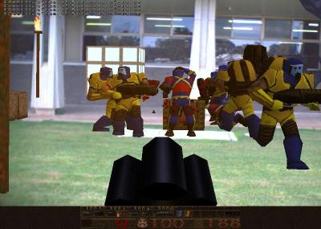

ARQuake(){
Entrevista
printf: You have been developing ARQuake. Please explain us what it is and what the main purposes of this library.
Bruce: ARQuake is an Augmented Reality version of the Quake game. ARQuake allows the user to run around in the real world whilst playing a game in the computer generated world projected onto a see through head mounted display. The movement keystrokes of the game are replaced with GPS and digital compass updates. The "fire" commands are integrated into a custom toy gun.
The main purpose of ARQuake was to motivate undergraduate students to work on a AR project with me!
printf: What were your principal difficulties when developing ARQuake?
Bruce: The main difficulties we two fold: the sensing technology was quite poor and Quake was not really designed for humans to physically run around and play the game. The monsters are too quick in the game.
printf: Is there any intention to ARQuake become commercial?
Bruce: We tried to make a company a_rage. It really was way too early back 5 years ago when we tried to do this. You can a little of it a http://a-rage.com/
printf: Is there any other project to develop games in Augmented Reality?

ARQuake Game
Bruce: We are now also looking into Spatial Augmented Reality (SAR), a branch of AR research utilising digital projectors as the display technology. The lab conducts research into novel interaction techniques and systems for SAR, presentation of information, and advanced rendering techniques. We have a new lab that is 14 metres by 8.5 metres by 4 metres, and it has 40 projectors. We can render on the side of a car!
You can see all of our work at http://wearables.unisa.edu.au/
printf: We have some Computer Science students interested in AR. What are the steps they must follow so that you can be their advisor?
Bruce: Please send me your CV and some ideas of want you want work on. We have had over a dozen international interns in our lab over the years.
}